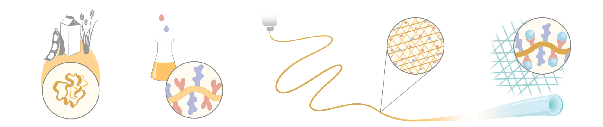

We're growing hollow glass fibers from casein, the protein that makes milk white. Casein is an inexpensive by-product of dairy, so it could make these fibers from an abundant starting material. The project is funded by ARIA's Universal Fabricators programme.
Hollow-core optical fibers guide light through air instead of solid glass, so signals travel faster and lose less. Today they are drawn from glass at around 2,000 °C, which takes a lot of energy and is hard to scale.
Five steps take a common protein to a hollow glass fiber. The fiber's shape and the glass grown on it are set in separate steps, so each can be tuned on its own. The project is developing each step.

Questions about the project?
info@impossiblefibers.com